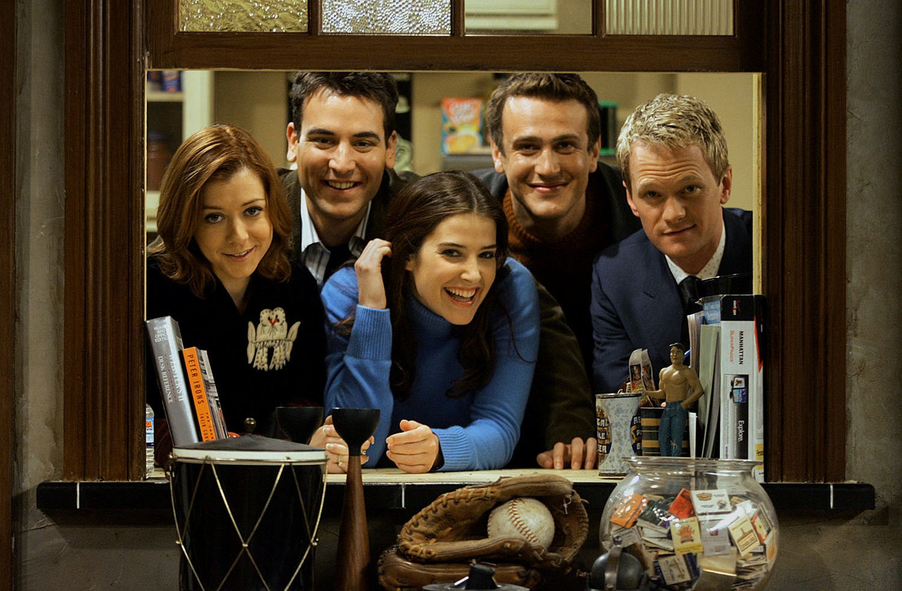

Personagens
- Ted Mosby (interpretado por Josh Radnor): O protagonista da série, Ted é um arquiteto romântico que está em busca do amor verdadeiro. Ele narra a história para seus filhos, contando como conheceu a mãe deles.
- Robin Scherbatsky(interpretada por Cobie Smulders): A amiga canadense e interesse amoroso de Ted. Robin é uma jornalista ambiciosa que lida com suas próprias questões pessoais ao longo da série.
- Barney Stinson(interpretado por Neil Patrick Harris): O amigo solteirão e extravagante do grupo. Barney é conhecido por seu estilo de vida hedonista, seu amor por ternos caros, e por suas teorias e estratégias para conquistar mulheres.
- Lily Aldrin(interpretada por Alyson Hannigan): Esposa de Marshall, Lily é uma professora de jardim de infância com uma personalidade doce, porém ocasionalmente manipuladora. Ela é conhecida por sua paixão por arte e por ser a cola que mantém o grupo unido.
- Marshall Eriksen (interpretado por Jason Segel): O melhor amigo de Ted desde os tempos de faculdade. Marshall é um advogado sensível e engraçado, conhecido por seu amor por sua esposa Lily e por suas brincadeiras com Barney.
|

|